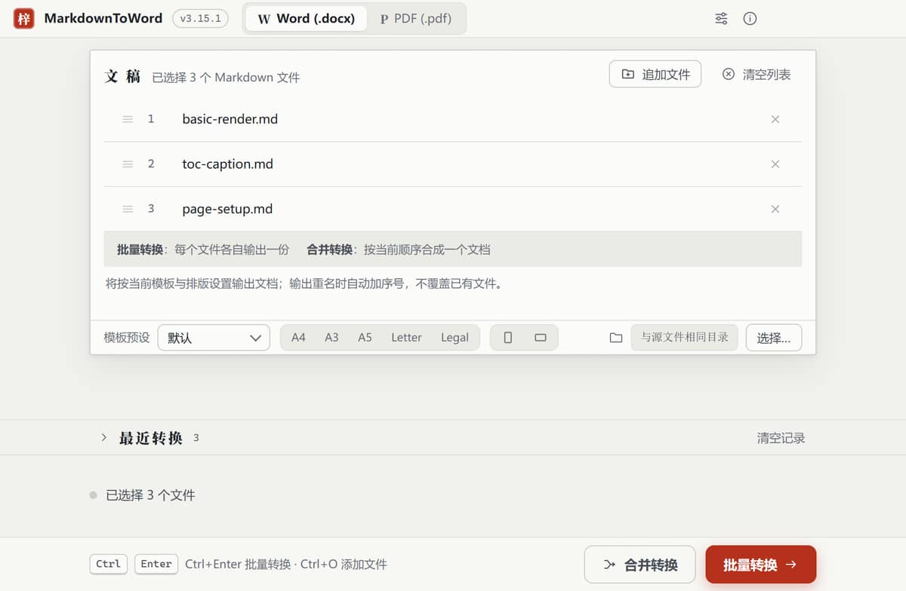
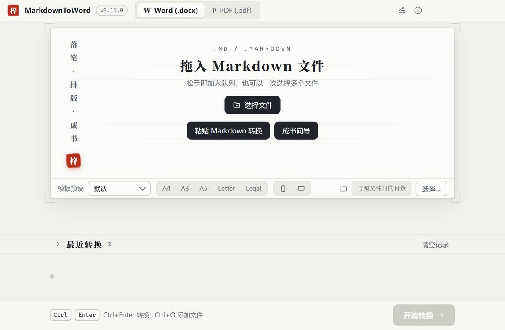
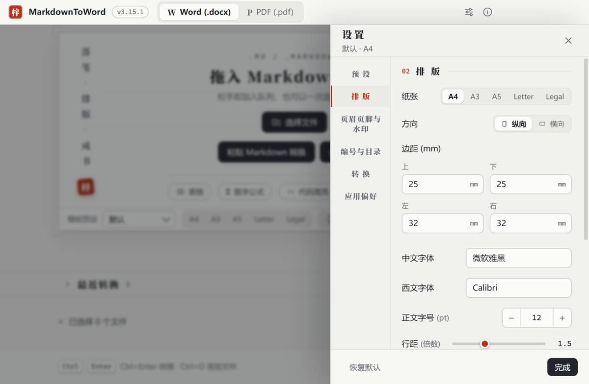
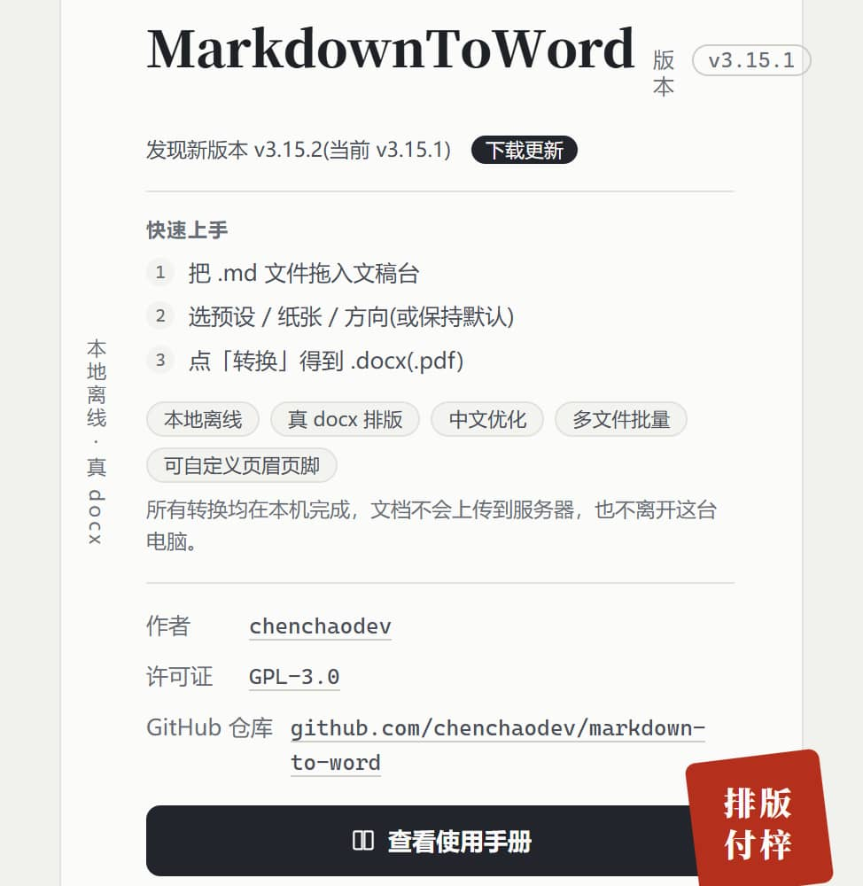
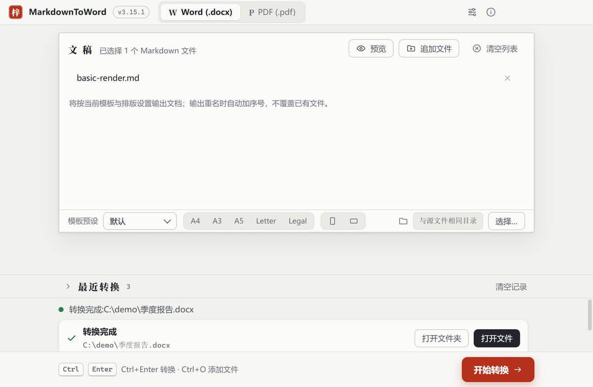

Markdown 转 Word / PDF 的本地桌面工具。文件不上传，离线可用；输出真正的 .docx 文档，中文排版可控。支持剪贴板直转、七步成书向导、AI 清理、Obsidian 兼容。 A local desktop tool that converts Markdown to Word / PDF. No uploads, fully offline. Produces real .docx files with controllable Chinese typesetting. Supports clipboard convert, book wizard, AI cleanup, and Obsidian compatibility.
文件始终在本机处理，无需联网，无需上传。断网也能正常转换。 Files are processed locally — no internet required, no uploads. Works fully offline.
输出标准 Word 文档，不是改后缀的网页。WPS 与 Microsoft Word 均可正常打开。 Produces standard Word documents, not renamed HTML. Opens in WPS and Microsoft Word without issues.
字体字号行距缩进、章节/题注/公式自动编号、目录、封面、页眉页脚页码，排版参数可逐项调节。学术排版支持公式交叉引用与图/表/章节跳转。 Fonts, sizes, line spacing, indentation, auto-numbered headings/captions/equations, TOC, cover page, headers, footers, and page numbers — all adjustable. Academic support includes equation cross-references and figure/table/section jumps.
单文件、批量、合并三种模式。多个 Markdown 可一次转出或合并为一个文档，重名文件自动加序号。 Single-file, batch, and merge modes. Convert multiple Markdown files at once or combine them into one document. Existing outputs are auto-renamed.
七步引导式成书——串联模板预设、页眉页脚、水印、合并、封面页，全程无需打开设置面板。主界面空态「粘贴 Markdown 转换」，不必先存文件。 Seven-step guided book creation — chain template presets, headers/footers, watermarks, merge, and cover pages without opening settings. Paste Markdown directly from clipboard on the empty state to convert without saving first.
AI 清理默认关闭，可分「保守规整」「结构改写」两档开启，清理裸数字引用标记、emoji 与标题层级错位。自动转换 Obsidian 双链与嵌入。导入 Word 模板提取字体与页面设置。 AI cleanup is off by default and offers two levels — conservative tidy-up and structural rewrite — stripping bare numeric citations, emoji and mis-leveled headings. Obsidian wikilinks and embeds convert automatically. Import Word templates to extract fonts and page settings.
\(、\[）、未配对的 $、未闭合的代码围栏、白名单外的 HTML 标签、未按表格排版的形似表格段落
Pre-check · Item-by-item scan before converting: missing local images, dangling cross-references, unlabeled code blocks, unsupported math delimiters (\(, \[), unpaired $, unclosed code fences, HTML tags outside the whitelist, table-like paragraphs not parsed as tables

主界面：拖入 Markdown 文件 → 选择格式 → 开始转换 Main window: drag Markdown file → choose format → convert

空态：粘贴剪贴板 Markdown 直接转换 Empty state: paste Markdown from clipboard to convert

设置面板：6 组标签页，排版参数逐项可调 Settings panel: 6 tab groups, all layout parameters adjustable

关于窗口：自动检查更新，一键下载最新版本 About window: auto-check updates, one-click download latest

转换完成：结果路径可复制，一键打开文件夹 Conversion complete: copy result path, open folder directly
下面的命令行入口与 MCP 服务端从编译产物启动，需要源码检出、Node.js ≥ 22.13 与一次完整构建。Windows 安装包只含图形界面，不含这两项。只想用图形界面的话，这一分区可以整段跳过。 The command-line entry point and the MCP server below start from the build output; they need a source checkout, Node.js ≥ 22.13, and a completed build. The Windows installer ships the desktop app only, with neither entry point. Readers after the graphical interface can skip this whole section.
安装包未做代码签名：Windows 可能弹出「已保护你的电脑」提示，选「更多信息 → 仍要运行」即可。请只从 GitHub Releases 官方页下载，并用随发布公布的 SHA-256 校验值比对安装包。 The installer is not code-signed, so Windows may show a “Windows protected your PC” prompt — choose “More info → Run anyway”. Download only from the official GitHub Releases page, and verify the installer against the SHA-256 checksum published with the release.
除了图形界面，程序还提供命令行入口与 MCP 服务端，可在脚本、批处理与 AI 助手里调用同一套转换能力。两者都从编译产物启动，不随安装版程序分发（安装包里只有图形界面），使用前需先完成构建。 Besides the desktop app, the program offers a command-line entry point and an MCP server, so scripts, batch jobs, and AI assistants can call the same conversion pipeline. Both start from the build output and are not part of the installer (which ships the desktop app only); build the project first.
node dist/cli/index.js <输入路径...> [选项]<input paths…> [options]
node dist/cli/index.js 笔记.md --format both
node dist/cli/index.js ./文章目录 --json退出码0 成功 · 1 命令行写法有误 · 2 输入读不到 · 3 转换失败 · 4 产物写不出去 Exit codes0 success · 1 bad usage · 2 input unreadable · 3 conversion failed · 4 output not writable
选项 · --format docx|pdf|both · -o/--output 路径 · --template 预设id · --json · --help
Options · --format docx|pdf|both · -o/--output path · --template preset-id · --json · --help
产物重名时自动写成「名 (2).docx」，不覆盖既有文件；用 -o 指定路径时不自动改名，该路径已被占用则本次转换直接失败。
When a name collides, the output becomes “name (2).docx” instead of overwriting; with -o the path is used verbatim, and an occupied path fails the run.
命令行没有图表渲染宿主，```mermaid 围栏按等宽代码块写入产物。需要图形时用图形界面转换。
The command line has no diagram renderer, so ```mermaid fences land in the output as monospaced code blocks. Use the desktop app when diagrams are needed.
node dist/mcp/index.js
在助手的 MCP 配置里登记该入口并重启助手，工具列表里会出现 convert_markdown，把 Markdown 转成 .docx。
Register the entry in the assistant's MCP configuration and restart it; the tool convert_markdown then turns Markdown into .docx.
只产出 Word。Mermaid 图表会降级为代码块，并在返回值的 degraded 字段里写明，助手据此可判断这份产物是否需要人工补图。
Word output only. Mermaid diagrams are degraded to code blocks, and the degraded field of the result says so, so the assistant can tell whether a document needs diagrams added by hand.